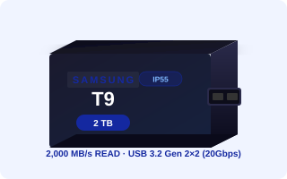

T7 Shield를 쓰고 있는데 T9이 계속 눈에 들어옵니다.
스펙표를 보면 읽기 속도가 1,050 MB/s에서 2,000 MB/s로 두 배 가까이 올라간다고 나와 있지만,
실제로 내 작업에서 그 차이가 느껴질까?라는 의문이 남습니다.
숫자는 알겠는데 체감이 될지 모르겠다는 분들을 위해, 두 제품을 나란히 놓고 비교해봤습니다.
▣ 핵심 3줄 요약
- T9(Gen 2×2, 20Gbps)은 T7 Shield(Gen 2, 10Gbps)보다 이론 대역폭이 두 배입니다.
- 실측 기준으로도 T9은 약 1,100~2,000 MB/s, T7 Shield는 약 900~1,050 MB/s 수준입니다.
- 4K 영상 편집·대용량 이동이 아닌 일반 파일 백업 용도라면 T7 Shield도 충분할 수 있습니다.
①스펙 비교 — T9 vs T7 Shield
| 항목 |
T9 |
T7 Shield |
| 인터페이스 |
USB 3.2 Gen 2×2
(20Gbps) |
USB 3.2 Gen 2
(10Gbps) |
| 읽기 최대 속도 |
2,000 MB/s |
1,050 MB/s |
| 쓰기 최대 속도 |
1,950 MB/s |
1,000 MB/s |
| 연속 실측 속도 |
1,100 MB/s+ |
900~1,050 MB/s |
| 방진·방수 등급 |
IP55 |
IP65 |
| 용량 라인업 |
1TB / 2TB / 4TB |
1TB / 2TB |
※ 공식 스펙은 각 제품 출시 시점의 삼성전자 공식 사이트 기준입니다.
같은 삼성 포터블 SSD라도 인터페이스 세대에 따라 이론 속도는 두 배 차이가 납니다.
단, T9의 속도를 온전히 쓰려면 PC에 USB 3.2 Gen 2×2(20Gbps) 포트가 있어야 합니다.
해당 포트 없이 연결하면 T9도 T7 Shield 수준의 속도로 제한됩니다.
②속도 차이가 체감되는 작업 vs 체감 안 되는 작업
01
50GB 4K 영상 파일 이동 — 체감 차이 있음
50GB 규모의 4K 영상 파일을 한 번에 이동하는 작업에서는 두 드라이브 간 시간 차이가 뚜렷합니다.
T9의 경우 Gen 2×2 환경 기준으로 약 40~45초 소요됩니다. T7 Shield는 같은 작업에 약 50~60초가 걸립니다. 절대 수치로는 10~20초 차이지만, 이런 작업이 하루에 수십 번 반복된다면 시간이 쌓입니다.
T9: 약 40~45초 / T7 Shield: 약 50~60초
Gen 2×2 포트 환경이 확보된 경우에 한해 이 차이가 발생합니다.
02
라이트룸 카탈로그 백업 (소파일 다수) — 체감 차이 작음
라이트룸 카탈로그처럼 크기가 작은 파일이 수천 개인 경우에는 순차 전송 속도보다 파일당 처리 오버헤드가 병목이 됩니다.
이 작업에서는 T9과 T7 Shield 간 체감 차이가 작습니다. 두 드라이브 모두 랜덤 읽기·쓰기 환경에서의 실질적인 처리 속도는 크게 다르지 않기 때문입니다.
소파일 다수 전송에서는 T7 Shield와 T9의 체감 차이가 거의 없습니다.
이 용도가 주 사용 시나리오라면 T7 Shield로도 충분합니다.
03
스트리밍·실시간 편집 — T9에서만 가능한 워크플로
4K H.265 소스를 외장 드라이브에서 직접 열어 DaVinci Resolve나 Premiere Pro 타임라인에서 스크럽하는 워크플로는 읽기 속도가 직접적으로 영향을 미칩니다.
T7 Shield의 10Gbps 대역폭에서도 4K H.265 단일 스트림 재생은 대부분 가능합니다. 그러나 멀티스트림 동시 재생이나 4K RAW 직접 편집에서는 T9의 20Gbps 대역폭이 여유를 만들어냅니다.
다중 4K 스트림을 동시에 처리하거나 컬러 그레이딩 중 버퍼링 없는 재생이 필요하다면 T9이 유리합니다.
③방수등급 — IP55(T9) vs IP65(T7 Shield)
방수 등급에서는 오히려 T7 Shield가 앞섭니다. IP65는 모든 방향에서의 강한 물 분사도 버티는 수준이고, T9의 IP55는 물 분사에 대한 보호는 되지만 등급이 한 단계 낮습니다.
야외 현장 촬영, 우중 촬영, 익스트림 스포츠 현장처럼 드라이브가 직접 물에 노출될 수 있는 환경에서는 T7 Shield의 IP65가 실질적인 차이를 만듭니다.
단, 두 제품 모두 수중 침수(IP67 이상)는 보호 범위 밖입니다. 물에 직접 담그는 상황은 피하는 것이 좋습니다.
| 등급 | T9: IP55 / T7 Shield: IP65 |
|---|
| IP 5등급 (분진) | 분진의 완전 차단은 아니지만 충분한 보호 |
|---|
| IP 5등급 (방수, T9) | 모든 방향의 물 분사에 보호 |
|---|
| IP 6등급 (방수, T7 Shield) | 강한 물 분사(직수)에도 보호 |
|---|
| 야외 권장 | 강수·먼지 환경 현장 작업 시 T7 Shield 우위 |
|---|
④어떤 분께 어떤 드라이브가 맞나
✅ T9이 맞는 경우
- 현재 PC에 Gen 2×2(20Gbps) 포트가 확인된 경우
- 4K 영상 편집 워크플로가 주 용도인 크리에이터
- T7 이미 사용 중이며 속도 불만을 체감하고 있는 경우
- 4TB 대용량이 필요한 경우
- 외장 드라이브에서 직접 소스를 열어 편집하는 워크플로
⚠️ T7 Shield가 맞는 경우
- 현재 PC가 Gen 2×2를 지원하지 않는 경우
- 주 용도가 일반 파일 백업이나 사진 이동인 경우
- 야외 강한 방수(IP65)가 실제로 필요한 환경
- 가격 대비 효율을 중시하는 경우
- 2TB 이하 용량으로 충분한 경우
⑤구매 전 체크리스트
포트 규격 확인
내 PC / 노트북에 USB 3.2 Gen 2×2(20Gbps) 포트가 있는가?
장치 관리자 → 범용 직렬 버스 컨트롤러 → "USB 3.2 Gen 2×2" 문구 확인
없다면 T7 Shield(Gen 2, 10Gbps)로도 충분한 성능이 나오는지 용도를 재검토한다
케이블 확인
20Gbps 지원 케이블을 사용하는가? (T9 동봉 케이블 권장)
케이블이 Gen 2×2 미지원이면 포트가 있어도 속도가 제한됩니다
USB 허브 경유 없이 PC에 직접 연결이 가능한가?
용도 확인
50GB 이상 대용량 파일 연속 전송이 자주 발생하는가?
외장 드라이브에서 4K 소스를 직접 열어 편집하는 워크플로인가?
야외 현장에서 강한 물 분사 노출이 현실적으로 있는 환경인가?
있다면 IP65인 T7 Shield가 더 적합할 수 있습니다
▣ 오늘 내용 요약
- T9은 USB 3.2 Gen 2×2(20Gbps) 기반으로 T7 Shield(10Gbps) 대비 이론·실측 모두 약 두 배의 속도를 냅니다. 단, Gen 2×2 포트 환경이 전제입니다.
- 4K 대용량 이동 및 실시간 편집 워크플로에서는 T9의 속도 우위가 체감됩니다. 소파일 다수 백업이나 일반 사용에서는 T7 Shield와 큰 차이가 없습니다.
- 방수 등급은 T7 Shield(IP65)가 T9(IP55)보다 높습니다. 야외 현장 작업이 많고 방수가 더 중요하다면 T7 Shield가 더 적합합니다.
💬 여러분은 현재 T7을 쓰고 계신가요? 아니면 T9으로 넘어갈 계획이 있으신가요?
현재 드라이브에 속도 불만이 있는지, 아니면 T7으로도 충분한지 댓글로 알려주시면
다음 콘텐츠 방향에 반영하겠습니다!
출처
삼성전자 공식 사이트 — T9 Portable SSD 제품 페이지 (2023년 출시 기준)
삼성전자 공식 사이트 — T7 Shield Portable SSD 제품 페이지
USB Implementers Forum — USB 3.2 사양 문서
퀘이사존 — 삼성 T9 실사용 후기 (2024년 11월)
본 글은 공개된 공식 스펙 및 외부 실사용 데이터를 바탕으로 작성됐습니다. 가격 및 성능 수치는 시점과 환경에 따라 달라질 수 있으며, 구매 전 최신 정보를 직접 확인하시길 권장합니다.
#삼성T9
#삼성T7Shield
#외장SSD비교
#포터블SSD비교
#USB20Gbps
#USB10Gbps
#외장SSD추천
#크리에이터장비
#4K편집SSD
#삼성포터블SSD
#SSD속도비교
#외장SSD구매가이드